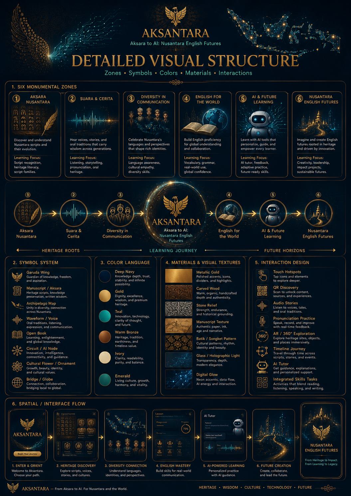
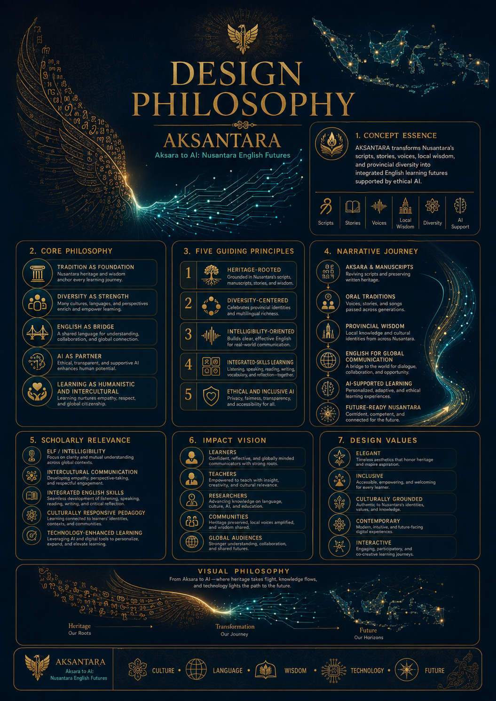
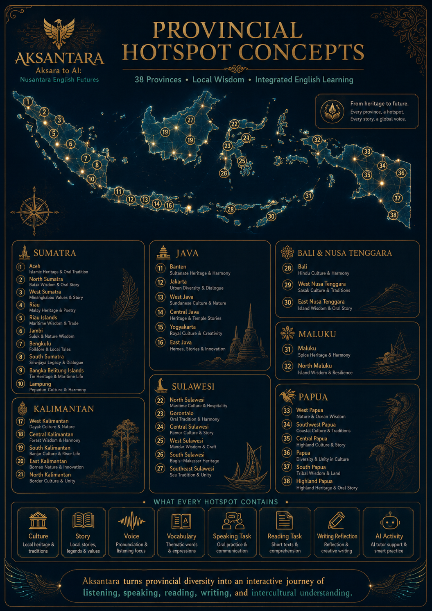

Six Living Zones
The app is not a gallery. It is a working journey from heritage literacy to global English communication supported by ethical AI.
Province Hotspots
Select any province. The whole app updates automatically: Aksara Studio, Skills, Voice Atlas, AI Tutor, and QR Station.
Aksara Studio
This is the main identity of AKSANTARA: every province promotes script heritage, manuscript literacy, oral story, and English learning tasks.
Promote Aksara through English
Province Detail
Learning Module
Features are not zero: each selected province provides real content for listening, speaking, reading, writing, vocabulary, and intercultural reflection.
Pronunciation & Intelligibility
Practice English as a bridge for global communication while keeping local identity visible and respected.
Voice Practice
Intelligibility Rubric
Ethical AI Tutor
Local simulated AI support for guidance, reflection, prompts, and learning suggestions. Works fully on GitHub Pages.
AI Smart Suggestions
Province QR Card
QR card updates automatically based on selected province and can be downloaded for exhibition labels.
Exhibition Label
Professional Dossier
Your provided pictures are integrated as design boards, while the app interface is rebuilt as working features.

UI direction and premium system.

Zones, symbols, interactions.

Scholarly foundation.

38-province learning map.
Admin Lock
Admin is protected with PIN. It controls selected province notes and app state locally.